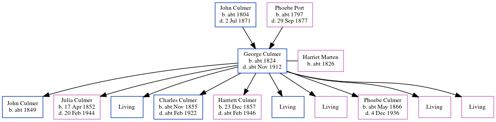

Harriet Culmer (née Marten) c1826 -
[ Home ] | [ Calendar ] | [ Surnames Index ] | [ Errors ] | [ Family History ]Harriet Marten, the wife of George Culmer (the three times great-uncle of Nigel Horne), was born in Canterbury, Kent, England c. 1826 and married George (an agricultural labourer with whom she had 10 children: John, Julia, George, Charles, Harriett, Frederick, Alice, Phoebe Ann, Louisa and Emma, along with 5 surviving children) at Ss Cosmus & Damian, Blean, Kent, England on 14 Dec 18511.
During her life, she was living at St Thomas Hill in Canterbury on 7 Apr 18612; and at Sheldwich Road, Preston, Faversham, Kent on 2 Apr 18713.
Children
- John was born c. 1849
- Julia was born on 17 Apr 1852
- Charles was born c. Nov 1855
- Harriett was born on 23 Dec 1857
- Phoebe Ann was born c. May 1866
Citations
- Kent, Canterbury Archdeaconry marriages 1538-1928 - Findmypast
- 1861 England, Wales & Scotland Census - Findmypast (was age 35 and the wife of the head of the household)
- 1871 England, Wales & Scotland Census - Findmypast (was age 46 and the wife of the head of the household)
Media
Kent, Canterbury Archdeaconry marriages 1538-1928 - GBPRS/CANT/M/97034201/2
Family Tree
Map
Generated by ged2site. Last updated on Jul 3, 2024
Known Issues
Birth date (abt 1826) has no citations